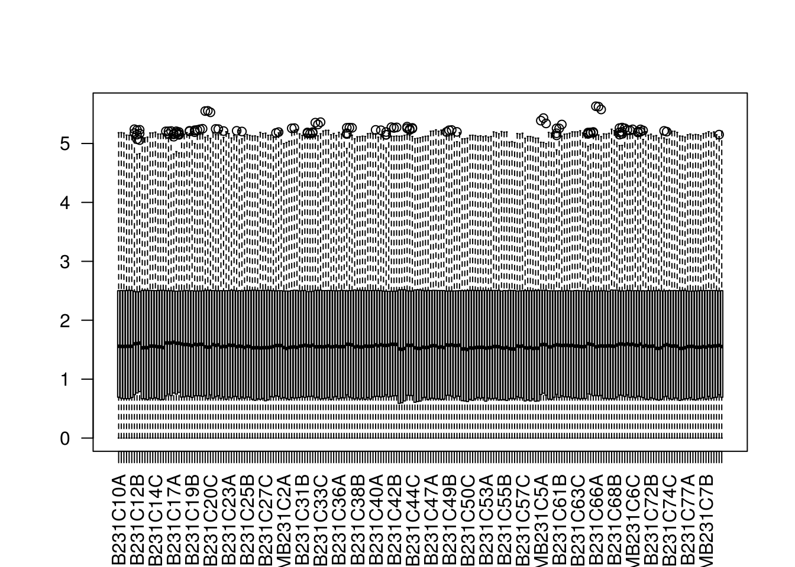
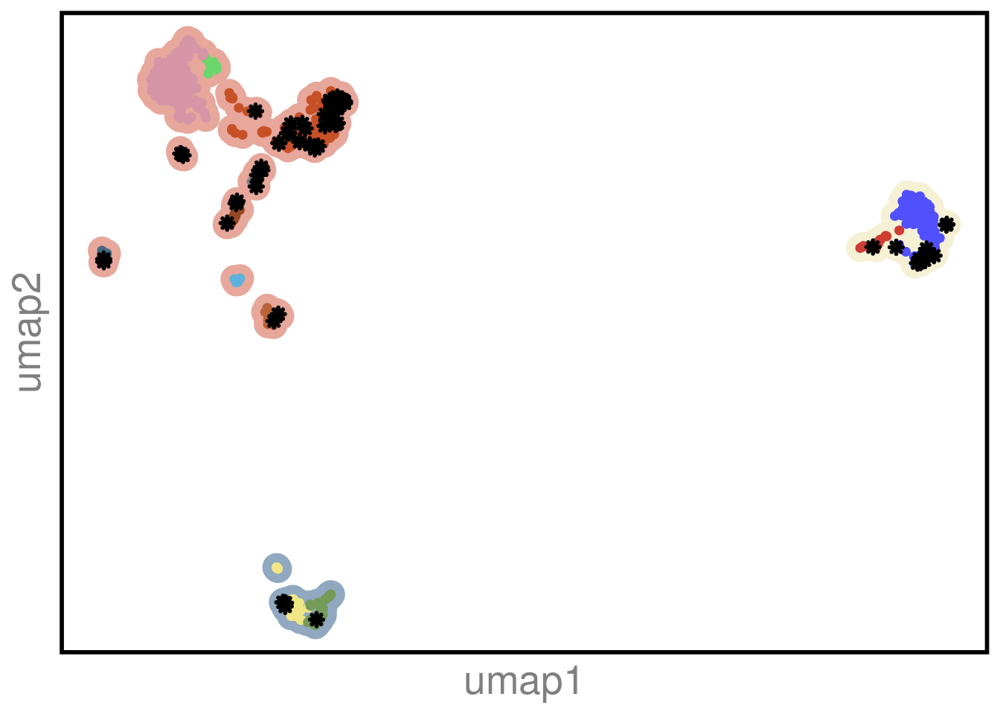
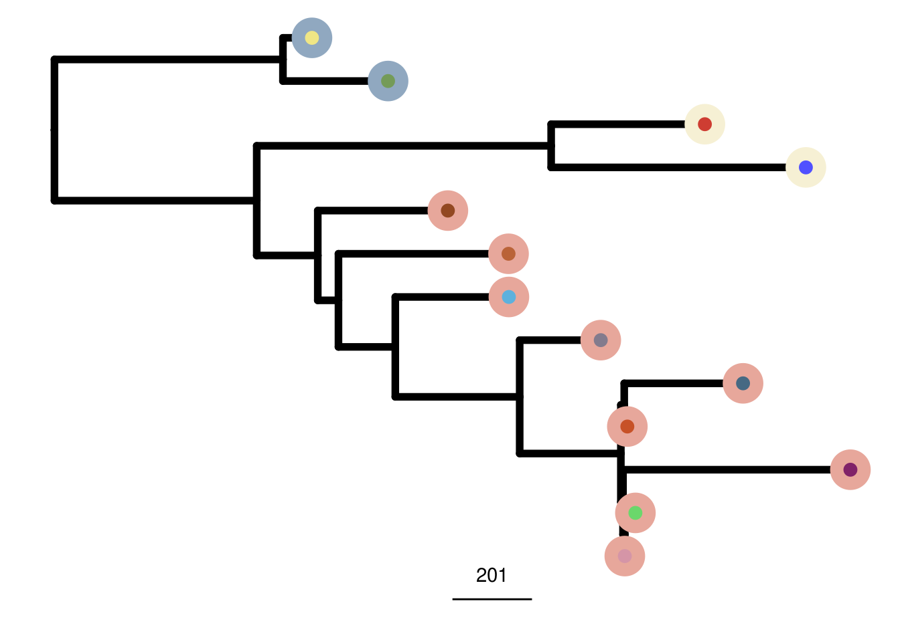
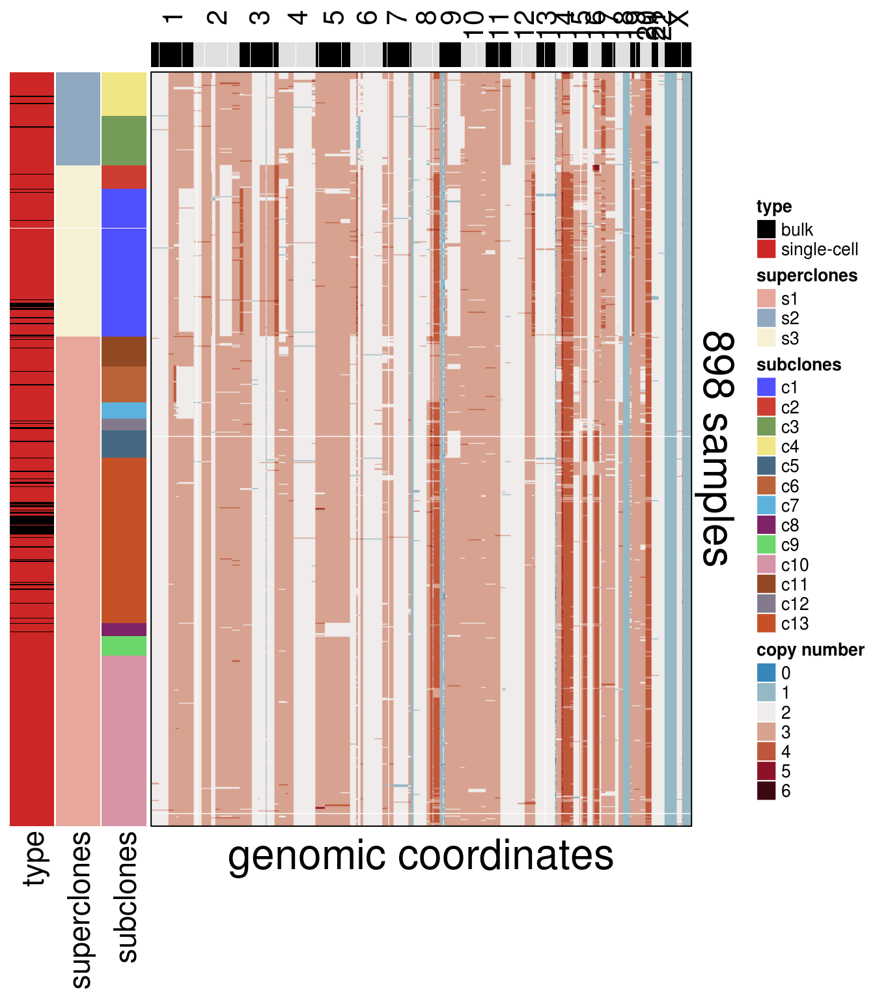
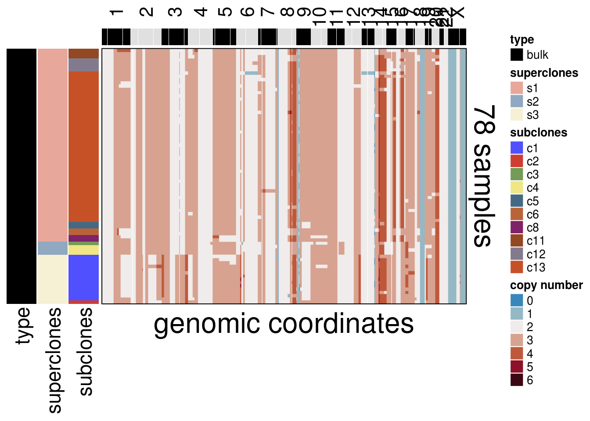
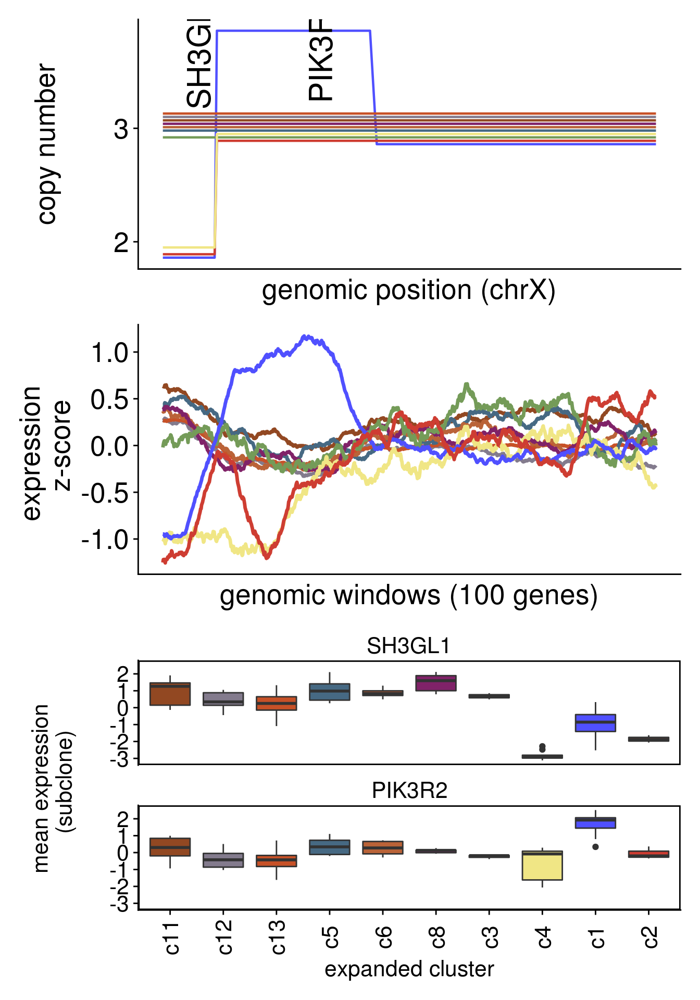
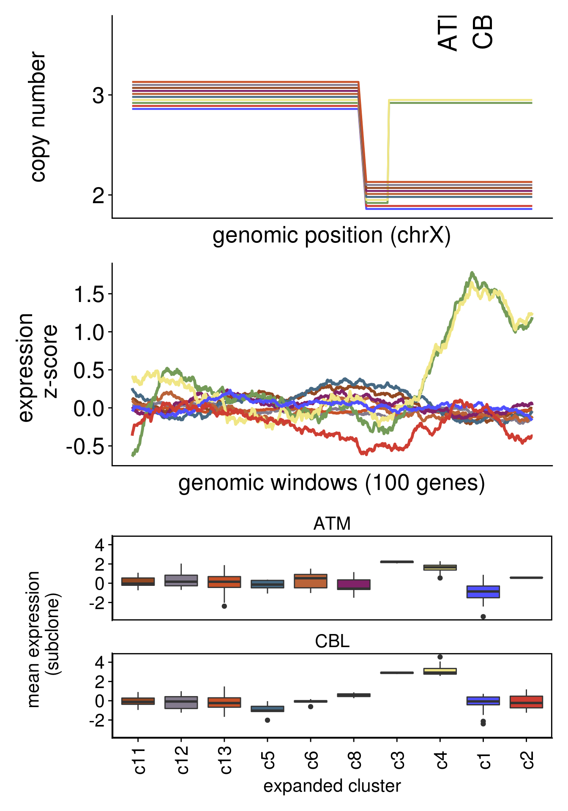
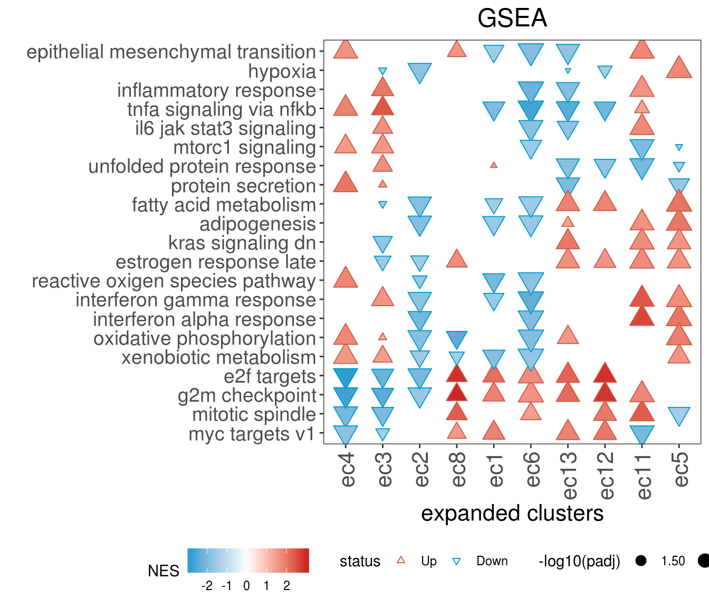

8 MDA-231 DNA & RNA
Transcript abundances for expanded clones triplicates were quantified by Salmon (v.0.14) with GENCODE transcript v30 and options -l A -1 read1 -2 read2 -p 40 –validateMappings –seqBias –gcBias. Quantified transcripts were imported into R with ‘tximport’ (v 1.14). Expanded clones e7, e39 and e71 had one technical replicate excluded due to poor RNA quality
source("R/setup.R")
source("R/run_umap.R")
source("R/run_clustering.R")
source("R/order_dataset.R")
source("R/plot_umap.R")
source("R/calculate_consensus.R")
source("R/consensus_genomic_classes.R")
source("R/run_me_tree.R")
source("R/plot_heatmap.R")
source("R/plot_moving_averages.R")# ~~~~~~~~~~~~~~~~~~~~~~~~~~~~~~~~~~~ Sat Mar 6 17:34:47 2021
# RNA
# ~~~~~~~~~~~~~~~~~~~~~~~~~~~~~~~~~~~ Sat Mar 6 17:34:51 2021
# reading RNA data
dds <- readRDS(here("extdata/rna/mdamb231_rna_dds.rds"))
# Quality filtering
keep <- rowSums(counts(dds) >= 5) >= 3
dds <- dds[keep,]
# computation of size factors which normalize for
# differences in sequencing depth among samples
dds <- estimateSizeFactors(dds)## using 'avgTxLength' from assays(dds), correcting for library size
# variance-stabilizing transformation
vsd <- vst(dds)
# ~~~~~~~~~~~~~~~~~~~~~~~~~~~~~~~~~~~ Sat Mar 6 17:34:56 2021
# DNA
# ~~~~~~~~~~~~~~~~~~~~~~~~~~~~~~~~~~~ Sat Mar 6 17:35:01 2021
mda_ploidy <- 2.41
# data from DNA bulk expanded clones
# and from mda-mb-231 single-cell were merged to the same dataframe
mdamb231_sc_bulk_cna_popseg <- readRDS(here("extdata/popseg/mdamb231_sc_bulk_cna_popseg.rds"))
mdamb231_sc_bulk_cna_ml <- readRDS(here("extdata/merge_levels/mdamb231_sc_bulk_cna_ml.rds"))8.1 Co-clustering
## Constructing UMAP embedding.mdamb231_sc_bulk_clustering <- run_clustering(mdamb231_sc_bulk_umap,
k_snn_major = 43,
k_snn_minor = 14) ## Building SNN graph.## Running hdbscan.## cluster n percent
## c1 176 0.19599109
## c10 203 0.22605791
## c11 36 0.04008909
## c12 14 0.01559020
## c13 197 0.21937639
## c2 28 0.03118040
## c3 59 0.06570156
## c4 52 0.05790646
## c5 32 0.03563474
## c6 42 0.04677060
## c7 20 0.02227171
## c8 16 0.01781737
## c9 23 0.02561247## Done.mdamb231_sc_bulk_clustering_umap <- left_join(mdamb231_sc_bulk_umap,
mdamb231_sc_bulk_clustering,
by = c("cell" = "cells"))
mdamb231_sc_bulk_clustering_umap <- mdamb231_sc_bulk_clustering_umap %>%
mutate(
type = case_when(str_detect(cell, "gDNA") ~ "bulk",
TRUE ~ subclones),
shape = case_when(str_detect(cell, "gDNA") ~ 8,
TRUE ~ 20),
size = case_when(str_detect(cell, "gDNA") ~ 1.2,
TRUE ~ 1),
)
p1 <- mdamb231_sc_bulk_clustering_umap %>% arrange(desc(type)) %>%
ggplot() +
geom_point(aes(V1,V2, color = superclones), size = 6) +
geom_point(aes(V1,V2, color = type, shape = shape, size = size), stroke = 1.5) +
scale_color_manual(values = c(colors_vector$superclones, colors_vector$subclones, "bulk" = "black")) +
scale_shape_identity() +
scale_size_identity() +
theme_classic() +
theme(axis.title.x=element_text(colour = "gray50", size = 20),
axis.text.x= element_blank(),
axis.ticks.x=element_blank(),
axis.title.y = element_text(colour = "gray50", size = 20),
axis.text.y = element_blank(),
axis.ticks.y = element_blank(),
axis.line = element_blank(),
legend.position = "none",
panel.border = element_rect(color = "black",
fill = NA,
size = 2),
# legend.position = "null"
) +
labs(color = "") +
xlab("umap1") +
ylab("umap2")
p1
# this setup will be used to plot the heatmap later
mda_ordered <- order_dataset(popseg_long = mdamb231_sc_bulk_cna_ml,
clustering = mdamb231_sc_bulk_clustering)
mda_cocluster_consensus <- calculate_consensus(df = mda_ordered$dataset_ordered,
clusters = mda_ordered$clustering_ordered$subclones)
mda_cocluster_me_tree <- run_me_tree(consensus_df = mda_cocluster_consensus,
clusters = mdamb231_sc_bulk_clustering,
ploidy_VAL = mda_ploidy)
8.2 Single-cell + Bulk Heatmap
plot_heatmap(df = mda_ordered$dataset_ordered,
ploidy_VAL = mda_ploidy,
ploidy_trunc = 2*(round(mda_ploidy))+2,
clusters = mda_ordered$clustering_ordered,
genomic_classes = NULL,
keep_gene = NULL,
tree_order = mda_cocluster_me_tree$cs_tree_order,
show_legend = TRUE,
mda_cocluster = TRUE)
8.3 Bulk Heatmap
mdamb231_bulk_cna_long <- mda_ordered$dataset_ordered[str_detect(rownames(mda_ordered$dataset_ordered), "gDNA"),]
# clustering info
mdamb231_bulk_cl_info <- mda_ordered$clustering_ordered %>%
filter(str_detect(cells, "gDNA")) %>%
arrange(superclones, subclones)
# matching order
mdamb231_bulk_ordered <- mdamb231_bulk_cna_long[mdamb231_bulk_cl_info$cells,]
plot_heatmap(df = mdamb231_bulk_ordered,
ploidy_VAL = mda_ploidy,
ploidy_trunc = 2*(round(mda_ploidy))+2,
clusters = mdamb231_bulk_cl_info,
genomic_classes = NULL,
keep_gene = NULL,
tree_order = NULL,
show_legend = TRUE,
mda_cocluster = TRUE)
8.4 DNA & RNA
# Biomart
grch37 <-
useMart(
biomart = "ENSEMBL_MART_ENSEMBL",
host = "grch37.ensembl.org",
path = "/biomart/martservice",
dataset = "hsapiens_gene_ensembl"
)
# hg19 chromosome positions from http://hgdownload.cse.ucsc.edu/goldenPath/hg19/bigZips/hg19.chrom.sizes
hg19_chrom_sizes <- readRDS(here("extdata/lib/hg19.chrom.sizes.rds"))
# transforming into a named vector and sorting by chrom
hg19_chrom_sizes <- hg19_chrom_sizes[1:23,]
hg19_chrom_sizes <- deframe(hg19_chrom_sizes)
hg19_chrom_sizes <- hg19_chrom_sizes[gtools::mixedsort(names(hg19_chrom_sizes))]
# obtaining the position for every ensembl gene id
bms <- list()
for(i in 1:length(hg19_chrom_sizes)) {
chrom <- str_remove(names(hg19_chrom_sizes)[i], "chr")
if (chrom != "X")
chrom <- as.numeric(chrom)
length_chrom <- hg19_chrom_sizes[i]
bms[[i]] <-
getBM(
c(
"ensembl_gene_id",
"hgnc_symbol",
"start_position",
"end_position"
),
filters = c("chromosome_name", "start", "end"),
values = list(chrom,
0, length_chrom),
mart = grch37
)
bms[[i]] <- bms[[i]] %>% arrange(start_position)
names(bms)[[i]] <- names(hg19_chrom_sizes)[i]
}
bms_df <- bind_rows(bms, .id = "chr") %>%
dplyr::rename(gene = "hgnc_symbol",
gene_id = "ensembl_gene_id")
# obtaining the count matrix of the MDAMB231 bulk RNAseq
cnt <- assay(vsd)
# gene id clean up
rownames(cnt) <- str_extract(rownames(cnt), "[A-Z]+[0-9]+")
# averaging the expression of the RNA triplicates and calculating a zscore
cnt_long <- cnt %>%
as.data.frame() %>%
tibble::rownames_to_column("gene_id") %>%
tidyr::gather(key = "sample",
value = "count",
-gene_id) %>%
mutate(sample = str_remove(sample, "[A-C]$"))
cnt_long_avg <- cnt_long %>%
group_by(gene_id, sample) %>%
summarise(count_avg = mean(count)) %>%
ungroup() %>%
group_by(gene_id) %>%
mutate(z_score = (count_avg-mean(count_avg))/sd(count_avg)) %>%
ungroup()
# wide df will be used later for moving average
cnt_avg <- tidyr::pivot_wider(cnt_long_avg,
names_from = sample,
values_from = z_score,
id_cols = gene_id)
cnt_avg <- as.data.frame(cnt_avg)
rownames(cnt_avg) <- cnt_avg$gene_id
cnt_avg <- cnt_avg %>%
dplyr::select(-gene_id)8.5 Moving averages
# adding segments from population segmentation information
mdamb231_bulk_cna_id <- mdamb231_sc_bulk_cna_popseg %>%
mutate(seg_index = 1:nrow(mdamb231_sc_bulk_cna_popseg))
# clustering information
cl_info <- mdamb231_bulk_cl_info %>%
mutate(sample =str_remove(cells, "gDNA"),
sample = str_extract(sample, "MDAMB231C[0-9]+"))
seg_ids_long <- rep.int(mdamb231_bulk_cna_id$seg_index, mdamb231_sc_bulk_cna_popseg$n.probes)
# bulk integer df
mdamb231_bulk_cna_long_int <- ploidy_scale(ploidy_VAL = 2.41,
df = mdamb231_bulk_ordered)
rownames(mdamb231_bulk_cna_long_int) <- str_remove(rownames(mdamb231_bulk_cna_long_int), "gDNA") %>%
str_remove("_S[0-9]+")
blk_long <- as.data.frame(t(mdamb231_bulk_cna_long_int))
# adding pipeline information
blk_long$chr <- bins_in_cna_pipeline$chr[1:nrow(blk_long)]
blk_long$start <- bins_in_cna_pipeline$start[1:nrow(blk_long)]
blk_long$end <- bins_in_cna_pipeline$end[1:nrow(blk_long)]
blk_long$abspos <- bins_in_cna_pipeline$abspos[1:nrow(blk_long)]
blk_long$seg_index <- seg_ids_long
# creating a long file with a position vector according to the number of rows
blk_long_g <- blk_long %>%
mutate(pos = 1:nrow(blk_long)) %>%
gather(key = "sample",
value = "cn",
-c(chr, start, end, abspos, pos, seg_index))
# obataining gene positions Grange
txdb <- Homo.sapiens
hg19_genes <- GenomicFeatures::genes(txdb, columns = "SYMBOL")
hg19_genes_df <- as.data.frame(hg19_genes) %>%
mutate(SYMBOL = as.character(SYMBOL))
bins_gr <- bins_in_cna_pipeline %>%
makeGRangesFromDataFrame(keep.extra.columns = T, ignore.strand = T)
olaps <- findOverlaps(hg19_genes, bins_gr)
# finding which index (bin in the 200kb pipeline the gene is located)
# saving to a data frame
mk_df <- tibble(gene = hg19_genes_df$SYMBOL[queryHits(olaps)],
pos = subjectHits(olaps)) %>%
dplyr::distinct(gene, .keep_all = TRUE)
mk_df_j <- inner_join(mk_df, bms_df)
# all triplicates in long form
cnt_long_trip <- cnt %>%
as.data.frame() %>%
tibble::rownames_to_column("gene_id") %>%
tidyr::gather(key = "sample_trip",
value = "count",
-gene_id) %>%
mutate(sample= str_remove(sample_trip, "[A-C]$"))
cnt_long_all_zc <- cnt_long_trip %>%
group_by(gene_id) %>%
mutate(z_score = (count-mean(count))/sd(count)) %>%
ungroup()
cnt_long_gene_trip <- inner_join(cnt_long_all_zc, mk_df_j)
cnt_long_gene_trip <- inner_join(cnt_long_gene_trip, cl_info) %>%
arrange(chr, start_position)
# joining the copy number long data with the gene positions on their respective bins
blk_long_gj <- inner_join(blk_long_g, mk_df)
# adding the ensembl gene id information and the cluster information
blk_long_gj <- inner_join(blk_long_gj, bms_df) %>%
arrange(pos) %>%
left_join(cl_info)
# full dna rna table with counts merged by sample and ensemblgene_id
dna_rna <- inner_join(blk_long_gj,
cnt_long_avg)
# jitter to be able to visualize all the copy number tracks
jitter <- seq(-0.14, 0.17, 0.03)
cls <- gtools::mixedsort(unique(levels(droplevels(as.factor(blk_long_gj$subclones)))))
blk_long_gj_jit <- blk_long_gj %>%
mutate(cn = case_when(
subclones == cls[1] ~ cn + jitter[1],
subclones == cls[2] ~ cn + jitter[2],
subclones == cls[3] ~ cn + jitter[3],
subclones == cls[4] ~ cn + jitter[4],
subclones == cls[5] ~ cn + jitter[5],
subclones == cls[6] ~ cn + jitter[6],
subclones == cls[7] ~ cn + jitter[7],
subclones == cls[8] ~ cn + jitter[8],
subclones == cls[9] ~ cn + jitter[9],
subclones == cls[10] ~ cn + jitter[10]
))
plot_moving_average(chr = "chr19",
genes = c("SH3GL1","PIK3R2"))

8.6 DE
samples <- as.data.frame(colData(dds)) %>%
mutate(sample_name = str_extract(sample, "MDAMB231C[0-9]+"))
samples_cl <- left_join(samples, cl_info, by = c("sample_name" = "sample"))
#sanity check
samples_cl <- samples_cl[match(samples_cl$sample, colData(dds)$sample),]
# removing unused levels
colData(dds)$cluster <- droplevels(as.factor(samples_cl$subclones))
design(dds) <- formula(~ cluster)
register(BatchtoolsParam(workers = 60), default = TRUE)
dds <- DESeq(dds, parallel = TRUE, betaPrior = T)## using pre-existing normalization factors## estimating dispersions## gene-wise dispersion estimates: 60 workers## mean-dispersion relationship## final dispersion estimates, MLE betas: 60 workers## fitting model and testing: 60 workers## -- replacing outliers and refitting for 7 genes
## -- DESeq argument 'minReplicatesForReplace' = 7
## -- original counts are preserved in counts(dds)## estimating dispersions## fitting model and testing## [1] "Intercept" "clusterc11" "clusterc12" "clusterc13" "clusterc5" "clusterc6" "clusterc8" "clusterc3"
## [9] "clusterc4" "clusterc1" "clusterc2"8.7 RNA PCA
pcaData <- plotPCA(vst(dds), "cluster", returnData = T) %>%
mutate(triplicate = str_extract(name, "C[0-9]+"),
triplicate = tolower(triplicate)) %>%
mutate(sample = str_extract(name, "MDAMB231C[0-9]+"))
percentVar <- round(100 * attr(pcaData, "percentVar"))
cluster_anno <- mdamb231_sc_bulk_clustering %>%
filter(str_detect(cells, "gDNA")) %>%
mutate(sample = str_remove(cells, "gDNA")) %>%
mutate(sample = str_extract(sample, "MDAMB231C[0-9]+"))
pcaData <- pcaData %>%
left_join(cluster_anno, by = c("group" = "subclones",
"sample" = "sample"))
p_pca <- ggplot(pcaData, aes(x = PC1,
y = PC2)) +
scale_color_manual(values = c(colors_vector$subclones,
colors_vector$superclones)) +
geom_point(aes(color = fct_relevel(superclones, gtools::mixedsort(unique(as.character(pcaData$superclones))))), size = 8) +
geom_point(aes(color = fct_relevel(group, gtools::mixedsort(unique(as.character(pcaData$group))))), size = 3) +
xlab("PC1") +
ylab("PC2") +
theme_cowplot() +
theme(axis.title.x=element_text(size = 16),
axis.text.x= element_blank(),
axis.ticks.x=element_blank(),
axis.title.y = element_text(size = 16),
axis.text.y = element_blank(),
axis.ticks.y = element_blank(),
axis.line = element_blank(),
plot.title = element_text(hjust = 0.5),
legend.position = "none",
panel.border = element_rect(color = "black",
fill = NA,
size = 2)) +
labs(color = "subclone")8.8 FGSEA
# Thanks to https://stephenturner.github.io/deseq-to-fgsea/
fgseaResTidy <- list()
for (x in 1:length(clusters)) {
res <-
results(dds,
contrast = list(
paste0("cluster", clusters[x]),
paste0(
"cluster",
clusters[clusters %!in% clusters[x]]
)
),
listValues = c(1, -1 / 10))
rownames(res) <- str_replace(rownames(res),
".[0-9]+$", "")
res$symbol <- mapIds(
org.Hs.eg.db,
keys = row.names(res),
column = "SYMBOL",
keytype = "ENSEMBL",
multiVals = "first"
)
res$map <- mapIds(
org.Hs.eg.db,
keys = row.names(res),
column = "MAP",
keytype = "ENSEMBL",
multiVals = "first"
)
head(res[order(res$padj), ], 20)
res$gene_map <- paste0(res$symbol, " ", "(", res$map, ")")
res <- drop_na(as.data.frame(res))
res2_de <- res %>%
as_tibble() %>%
dplyr::select(symbol,
stat) %>%
na.omit() %>%
distinct() %>%
group_by(symbol) %>%
summarize(stat = mean(stat))
ranks_de <- deframe(res2_de)
pathways.hallmark <-
gmtPathways(
here("extdata/lib/h.all.v6.2.symbols.gmt")
)
fgseaRes <-
fgsea(pathways = pathways.hallmark,
stats = ranks_de,
nperm = 2000)
fgseaResTidy[[x]] <- fgseaRes %>%
as_tibble()
names(fgseaResTidy)[x] <- clusters[x]
}
fgseaResTidy_res <- bind_rows(fgseaResTidy, .id = "comparison")
# keeping only the significant pathways in x or more hallmarks
sig_path <- fgseaResTidy_res %>%
filter(padj < 0.05) %>%
group_by(pathway) %>%
dplyr::count() %>%
arrange(desc(n)) %>%
filter(n > 3) %>%
pull(pathway)
fgseaResTidy_res_f <- fgseaResTidy_res %>%
filter(pathway %in% sig_path) %>%
mutate(pathway = str_remove(pathway, "HALLMARK_")) %>%
mutate(pathway = str_replace_all(pathway, "_", " ")) %>%
mutate(pathway = str_to_lower(pathway)) %>%
mutate(comparison = paste0("e", comparison))
fg_cl <- pivot_wider(
fgseaResTidy_res_f,
names_from = pathway,
values_from = NES,
id_cols = comparison
) %>%
as.data.frame()
rownames(fg_cl) <- fg_cl[, 1]
fg_cl_hclust <- hclust(dist(fg_cl[, -1],
method = "euclidean"),
method = "ward.D")
fg_path <- pivot_wider(
fgseaResTidy_res_f,
names_from =
comparison,
values_from = NES,
id_cols = pathway
) %>%
as.data.frame()
rownames(fg_path) <- fg_path[, 1]
fg_path_hclust <- hclust(dist(fg_path[, -1],
method = "euclidean"),
method = "ward.D")
# thanks to https://mgrcbioinfo.github.io/my_GSEA_plot/
myGseaPlot <- function(gseaDataFrame, adjPCutoff = 0.05) {
# subset data frame using p value cutoff and add status factor
toPlot <- subset(gseaDataFrame, padj <= adjPCutoff) %>%
mutate(status = case_when(NES > 0 ~ "Up", NES < 0 ~ "Down")) %>%
mutate(status = factor(status, levels = c("Up", "Down")))
# create plot
p <-
ggplot(
data = toPlot,
mapping = aes(
x = fct_relevel(comparison,
rownames(fg_cl)[fg_cl_hclust$order]),
y = fct_relevel(pathway,
rownames(fg_path)[fg_path_hclust$order]),
color = status,
shape = status,
fill = NES,
size = -log10(padj)
)
) +
geom_point() +
scale_shape_manual(values = c(24, 25)) +
scale_fill_gradient2(
high = "firebrick3",
low = "deepskyblue3",
mid = "white",
midpoint = 0
) +
scale_color_manual(values = c(Up = "coral3", Down = "deepskyblue3")) +
ggtitle(paste0("GSEA")) +
theme_bw() +
theme(
plot.title = element_text(hjust = 0.5, size = 18),
axis.title.x = element_text(size = 16),
panel.grid = element_blank(),
legend.position = "bottom",
axis.text.x = element_text(
angle = 90,
hjust = 1,
size = 16,
vjust = .5
),
axis.text.y = element_text(size = 14)
) +
ylab("") +
xlab("expanded clusters")
return(p)
}
hallmarks_plot <-
myGseaPlot(gseaDataFrame = fgseaResTidy_res_f, adjPCutoff = 0.05)
hallmarks_plot